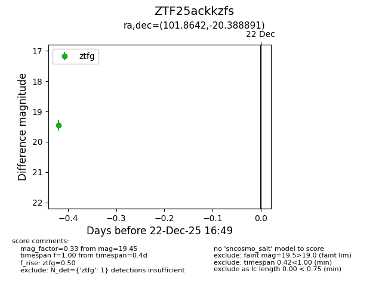
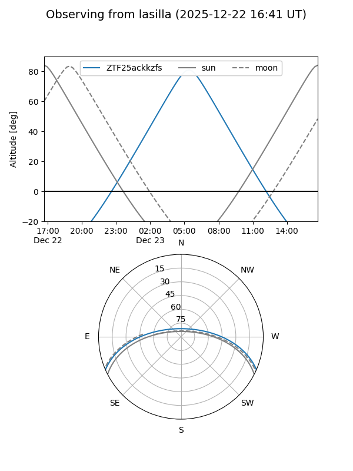
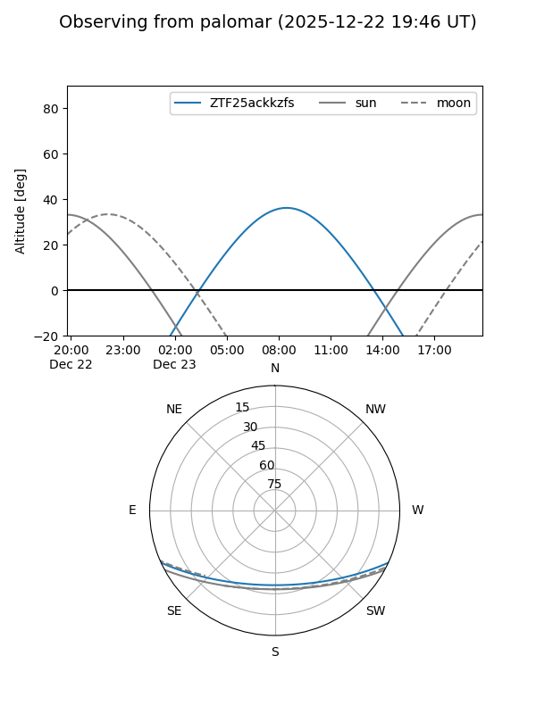

ZTF25ackkzfs
Target ZTF25ackkzfs at 2025-12-22 16:51
Aliases and brokers:
FINK: fink-portal.org/ZTF25ackkzfs
Lasair: lasair-ztf.lsst.ac.uk/objects/ZTF25ackkzfs
ALeRCE: alerce.online/object/ZTF25ackkzfs
alt names
ZTF25ackkzfs (ztf,fink_ztf)
Coordinates:
equatorial (ra, dec) = 101.8642,-20.38889
equatorial (HMS+DMS) = 06:47:27.42,-20:23:20.01
galactic (l, b) = (230.8280,-9.98268)
Flags:
Photometry:
last ztfg=19.45
1 ztfg detections
Lightcurve

Visibility


Additional plots